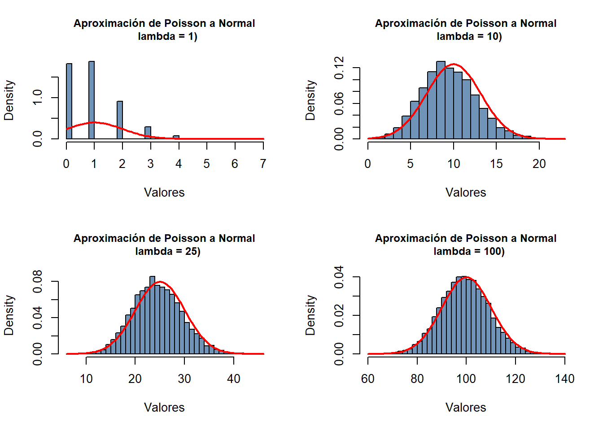
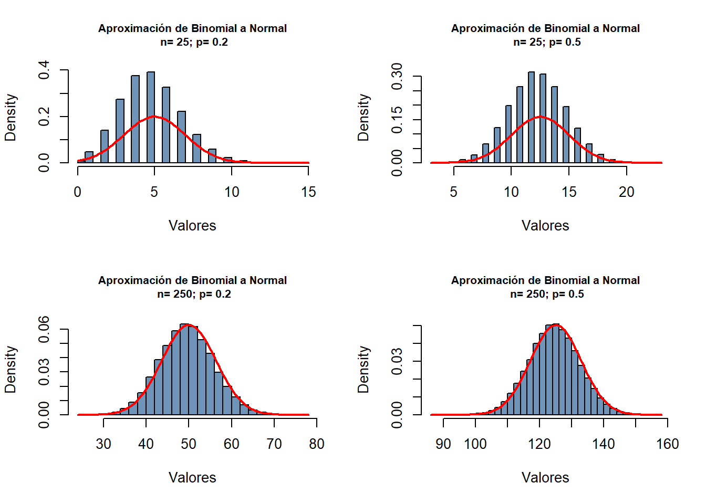

El Teorema Central del Límite (TCL) establece que, bajo ciertas condiciones, la suma (o media) de variables aleatorias independientes e idénticamente distribuidas tiende a seguir una distribución Normal conforme el número de variables crece. De manera precisa, si \(X_1, X_2, \dots, X_n\) son variables aleatorias independientes e idénticamente distribuidas con media \(\mu\) y varianza \(\sigma^2\), entonces:
Esta propiedad se utiliza para aproximar ciertas distribuciones discretas por distribuciones Normales en casos prácticos.
A continuación, exploraremos dos aplicaciones del TCL: la aproximación de la distribución de Poisson por una Normal y la aproximación de la distribución Binomial por una Normal, enfatizando su naturaleza como sumas de variables aleatorias.
Aproximación de Poisson por una Normal
La distribución de Poisson modela el número de eventos en un intervalo de tiempo o espacio dado, con una tasa promedio \(\lambda\). Cuando el parámetro \(\lambda\) es suficientemente grande, podemos aproximar \(X \sim \text{Poisson}(\lambda)\) mediante una distribución Normal.
Justificación Teórica
Sea \(X \sim \text{Poisson}(\lambda)\). Podemos interpretar \(X\) como la suma de \(n\) variables Poisson independientes de parámetro \(\frac{\lambda}{n}\). Esto significa que:
\[
X = \sum_{i=1}^n X_i, \quad X_i \sim \text{Poisson}\left(\frac{\lambda}{n}\right).
\]
Centrando y estandarizando esta suma, por el Teorema Central del Límite:
\[
Z = \frac{\sum_{i=1}^n X_i - n \cdot \frac{\lambda}{n}}{\sqrt{n \cdot \frac{\lambda}{n}}} = \frac{X - \lambda}{\sqrt{\lambda}} \xrightarrow{d} N(0,1), \quad \text{cuando } n \to \infty.
\]
Por lo tanto, podemos aproximar directamente \(X\) por \(N(\lambda, \lambda)\).
Incluimos una corrección de continuidad al usar esta aproximación para mejorar la precisión.
Ejemplo y Simulación
Supongamos que \(X \sim \text{Poisson}(\lambda = 15)\). Queremos calcular la probabilidad de que \(12 \leq X \leq 18\).
Cálculo Exacto
La probabilidad exacta usando la distribución Poisson es:
# Parámetroslambda <-150n_sim <-100000sim_and_plot_Poisson <-function(lambda, n_sim){# Generar muestras de Poissonset.seed(123)poisson_samples <-rpois(n_sim, lambda)# Gráfico comparativohist(poisson_samples, breaks =30, probability =TRUE, col =rgb(0.2, 0.4, 0.6, 0.7),main =paste0("Aproximación de Poisson a Normal\n lambda = ", lambda, ")"), cex.main=0.9, xlab ="Valores")curve(dnorm(x, mean = lambda, sd =sqrt(lambda)), col ="red", lwd =2, add =TRUE)# legend("topright", legend = c("Poisson", "Normal Aproximada"), # fill = c(rgb(0.2, 0.4, 0.6, 0.7), "red"))}opt<-par(mfrow=c(2,2))sim_and_plot_Poisson (lambda =1, n_sim=10000)sim_and_plot_Poisson (lambda =10, n_sim=10000)sim_and_plot_Poisson (lambda =25, n_sim=10000)sim_and_plot_Poisson (lambda =100, n_sim=10000)

par(opt)
Aproximación de Binomial por una Normal
La distribución Binomial modela el número de éxitos en \(n\) ensayos independientes con probabilidad de éxito \(p\). Cuando \(n\) es suficientemente grande y \(p\) no está demasiado cerca de 0 o 1, podemos aproximar \(X \sim \text{Binomial}(n, p)\) mediante una distribución Normal.
Justificación Teórica
Sea \(X \sim \text{Binomial}(n, p)\). Podemos interpretar \(X\) como la suma de \(n\) variables Bernoulli independientes con probabilidad de éxito \(p\). Esto significa que:
\[
X = \sum_{i=1}^n X_i, \quad X_i \sim \text{Bernoulli}(p).
\]
Centrando y estandarizando esta suma, por el Teorema Central del Límite:
\[
Z = \frac{\sum_{i=1}^n X_i - n p}{\sqrt{n p (1-p)}} = \frac{X - np}{\sqrt{np(1-p)}} \xrightarrow{d} N(0,1), \quad \text{cuando } n \to \infty.
\]
Por lo tanto, podemos aproximar directamente \(X\) por \(N(np, np(1-p))\).
Incluimos una corrección de continuidad para mejorar la precisión.
Ejemplo y Simulación
Supongamos que \(X \sim \text{Binomial}(n = 50, p = 0.4)\). Queremos calcular la probabilidad de que \(15 \leq X \leq 25\).
Cálculo Exacto
La probabilidad exacta usando la distribución Binomial es:
# Parámetrosn <-250p <-0.5n_sim <-100000sim_and_plot_Binomial <-function(n, p, n_sim){set.seed(123) binomial_samples <-rbinom(n_sim, size = n, prob = p)hist(binomial_samples, breaks =30, probability =TRUE, col =rgb(0.2, 0.4, 0.6, 0.7),main =paste0("Aproximación de Binomial a Normal\n n= ",n, "; p= ",p), cex.main=0.8, xlab ="Valores")curve(dnorm(x, mean = n * p, sd =sqrt(n * p * (1- p))), col ="red", lwd =2, add =TRUE)# legend("bottomright", legend = c("Binomial", "Normal Aproximada"), # fill = c(rgb(0.2, 0.4, 0.6, 0.7), "red"))}opt<-par(mfrow=c(2,2))sim_and_plot_Binomial (n =25, p =0.2, n_sim=100000)sim_and_plot_Binomial (n =25, p =0.5, n_sim=100000)sim_and_plot_Binomial (n =250, p =0.2, n_sim=100000)sim_and_plot_Binomial (n =250, p =0.5, n_sim=100000)

par(opt)
Conclusión
El Teorema Central del Límite nos permite aproximar distribuciones discretas como la Poisson y la Binomial mediante distribuciones Normales en escenarios prácticos, simplificando cálculos y análisis. Sin embargo, es importante verificar los criterios de aplicabilidad antes de usar estas aproximaciones.